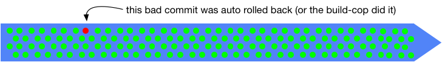

Five-minute overview
Distance
Branches create distance between developers and we do not want that
— Frank Compagner, Guerrilla GamesAssuming any network-accessible source control, physical distance is mitigated by AV technologies including screen sharing. So we will not worry about that so much these days.
Frank’s ‘distance’ is about the distance to the integration of code from multiple components/modules/sub-teams for a binary that could be deployed or shipped. The problematic distance is to code not yet in the single shared branch, that might:
- break something unexpected once merged
- be difficult to merge in.
- not show that work was duplicated until it is merged
- not show problems of incompatibility/undesirability that does not break the build
Trunk-Based Development is a branching model that reduces this distance to the minimum.
What it is
Notes
- Use of “Developers” throughout this site, means “QA-automators” for the same buildable thing, too.
- When we say ‘the trunk’ on this site, it is just a branch in a single repository that developers in a team are focusing on for development. It may be called ‘master’. That hints at the fact that the branch in question may literally not be called ‘trunk’ at all.
There are many deciding factors before a development team settles on Trunk-Based Development, but here is a short overview of the practices if they do:
Releasability of work in progress
Trunk-Based Development will always be release ready
If an executive manager visited the development team and commanded “Competitor X has launched feature Y, go live now with what we have”, the worst response would be “give us one hour”. The development team might have been very busy with tricky or even time-consuming tasks (therefore partially complete), but in an hour, they are able to go live with something just stabilized from the trunk. Perhaps they can do it in less than an hour. The rule, though, is to never break the build, and always be release ready because the CIO or the business may surprise you.
Where releases happen
A key facilitating rule is that Trunk-Based Development teams exclusively either release directly from the trunk - see release from trunk, or they make a branch from the trunk specifically for the actual release. See Branch for release. Teams with a higher release cadence do the former, and those with a lower release cadence do the latter.
Checking out / cloning
All developers in a team working on an application/service, clone and checkout from the trunk. They will update/pull/sync from that branch many times a day, knowing that the build passes. Their fast source-control system means that their delays are a matter of a few seconds for this operation. They are now integrating their teammates' commits on an hour-by-hour basis.
Committing
Similarly, developers completing a piece of development work (changes to source code), that does not break the build, will commit it back to the trunk. That it does not break the build should be provable. The granularity of that commit (how many a developer would implicitly do a day) can vary and is learned through experience, but commits are typically small.
The developer needs to run the build, to prove that they did not break anything with the commit before the commit is pushed anywhere. They might have to do an update/pull/sync before they commit/push the changes back to the team’s version control server, and additional builds too. There’s a risk of a race condition there, but let us assume that is not going to happen for most teams.
Code Reviews
The developer needs to get the commit reviewed. Some teams will count the fact that the code was ‘pair programmed’ as an automatic review. Other teams will follow a conventional design where the commit is marshaled for review before landing in the trunk. In modern portal solutions, marshaled nearly always means a branch/fork (Pull Request) that is visible to the team.
 (key)
(key)
^ the speech bubbles are stylized code review comments
Code review branches can (and should) be deleted after the code review is complete and be very short-lived. This is tricky for teams new to Trunk Based Development.
Note: You want to keep the commentary/approval/rejection that is part of the review for historical and auditing purposes, but you do not want to keep the branch. Specifically, you do not want the developers to focus on the branch after the code review and merge back to the trunk.
A safety net
Continuous Integration (CI) daemons are set up to watch the trunk (and the short-lived feature branches used in review), and as quickly and completely as possible loudly/visibly inform the team that the trunk is broken. Some teams will lock the trunk and roll-back changes. Others will allow the CI server to do that automatically.
 (key)
The high bar is verifying the commit before it lands in the trunk. Short-lived Pull Request branches are the modern place for that.
Developer team commitments
As stated, developers are pledging to be rigorous and not break the build. They’re also going to need to consider the impact of their potentially larger commits, especially where renames or moves were wholesale, and adopt techniques to allow those changes to be more easily consumed by teammates.
Drilling into ‘Distance’
Problematic ‘distance’ has a few tangible examples:
- Late merges of development that happened more than a couple of days ago.
- Difficult merges in particular
- A breaking build that lowers development team throughput, and diverts resources while it is being fixed
References elsewhere
show references